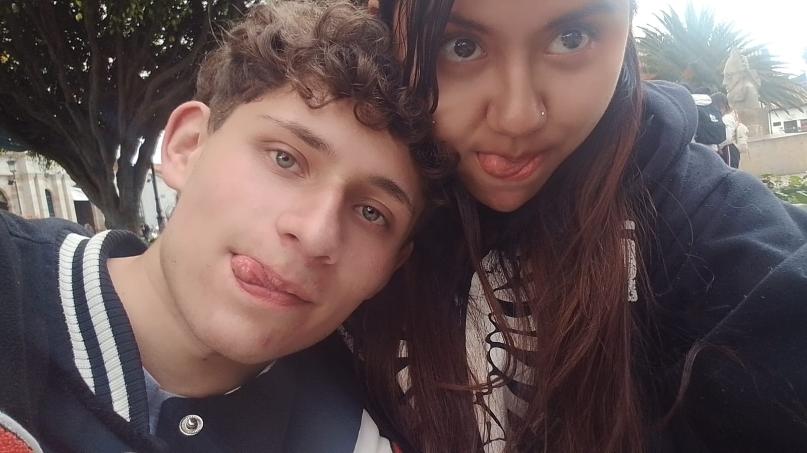

Aleja y yo ❤️🔥
Este es el inicio de nuestra historia. Te conoci en la cantina al frente del CBA, ese día estaba desparchado y fui a la cantina a molestar y bailar un rato y fue cuando te vi, estabas re linda, te mire y me hechizaste de primerazo. Tu altura, tu cara y tu forma de ser tan parchada me engancharon. Tu voz me gustaba muchisimo y aunque vi que tenias a alguien en ese momento decidi no comer de eso y escribirte y fue la mejor decisión de mi vida.
7 de Julio, nuestras primeras fotos juntos. Y las primeras flores que te di, me acuerdo que me dijiste que era la primera vez que un hombre te daba flores
Me dijiste que estaban muy lindas y yo te dije que más linda eres tú. Y siempre lo pensare, eres más linda que cualquier flor.
Y pues eso fue lo que paso el primer día, tal vez la pagina quede un poco fea, pero se intento hacer algo con lo que se tiene. :c
Prometo hacer una mejor cuando sepa más de programar y más de hacer esto, de momento se hace algo con lo que se sabe :c
Momentos especiales
Nuestros momentos especiales.
Sinceramente, hay muchos y muchos en los que no tomamos fotos, como por ejemplo nuestro primer beso en el parque con musica de fondo y todo lindo, fue todo perfecto y bello ese día.
Pero hay otros donde si hay fotos, como por ejemplo este día:
Este día fue lindo, en esas bancas tomandonos fotos y quedaron super limdas jsjsj y fue un día bastante divertido y lindo contigo

Estas fotos son hermosas, me encanta como nos vemos y más recordando lo feliz que era en esos momentos.
Este día jaja, ay este día, todo fue muy lindo, pero a la vez re intenso jaja y me gusto como lo hicimos, como todo fue con amor y deseo a la vez y todo lo que paso, hasta los sustos, fue muy lindo :3
Lo que vi en ti
Ya te lo he dicho miles de veces, pero te la repito una vez más. lo que vi en ti fue tu personalidad, tu hermosa forma de ser, eres muy de ambiente y eso me gusta. me alegra estar contigo, cuando te ries me sumas años de vida, tus hoyuelos en la carita cuando sonries son hermosos, tus ojos son preciosos también, tu pelo es re lindo y tu cuerpo, aunque tu muchas veces me has dicho que no te gusta, a mi, personalmente, me encanta y es hermoso. Además sabes que tu me has aportado muchisimo. Me has dado la felicidad que nunca encontrare en otras cosas y mucho menos en otras mujeres y eso si quiero que se te quede grabado. Ninguna mujer te llegara ni a los talones, grabate eso.
Bueno, es la ultima pagina, no se que más decir, solo que te quiero muchisimo y espero que esta pagina te guste y que no se dañe :cc